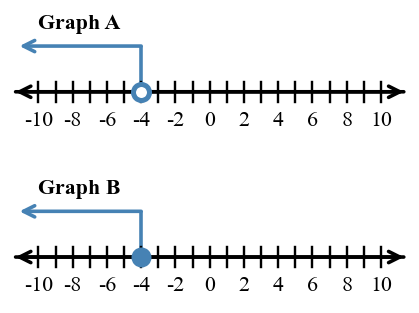

This practice set strengthens the core ideas for this section while keeping prerequisite skills active. Focus on showing how each representation or structure supports your answer.
In $2x+5=17$, which operation should be undone first?
Write the equation shown by: a number plus $9$ equals $20$.
Quinn has twice as many cards as Denali, then gives away $4$ cards. Quinn now has $18$ cards. Write and solve an equation for how many cards Denali started with.
The equation $12+4s=44$ models a bus situation. Solve for $s$ and write a sentence explaining what the solution means in context.
Solve each equation with fractions.
Fill in the missing step.
$5x-7=18$
$5x=\square$
$x=\square$
Solve $5-2x\le 13$. Then test one solution and one non-solution in the original inequality.
Choose the correct graph for $x\lt -4$ from the two number lines and explain the circle and shading choices.

A science tank starts at $-6.5$ degrees Celsius. It warms by $2.75$ degrees, cools by $4.1$ degrees, and then warms by $1.6$ degrees. Write one expression and find the final temperature.
Show two methods for simplifying $2(3x-4)+5(x+1)$: one by distributing first and one by grouping related terms after distribution. Explain why the methods lead to the same expression.
Analyze the structure of $6x+18$. Explain what is revealed by the form $6(x+3)$ that is not as visible in the original sum.
Create a three-entry temperature-change log whose net change is $-2.5$ degrees. Use at least one fraction, one decimal, and one integer. Show the expression that represents the log and justify the net change.
Find the repeated change in the outputs.
| Input | 0 | 1 | 2 | 3 |
|---|---|---|---|---|
| Output | 6 | 10 | 14 | 18 |
Does the table show equal input steps?
| $x$ | 0 | 1 | 3 | 6 |
|---|---|---|---|---|
| $y$ | 2 | 5 | 11 | 20 |
Two rules are $A(x)={2}x+9$ and $B(x)={4}x+1$. Evaluate both at $x={3}$ and $x={6}$, then describe which output is larger at each input.
Compare two solution methods for deciding when $A(x)={3}x+4$ becomes greater than $B(x)=x+14$: making a table and solving with reasoning from rates. Explain strengths of each method.